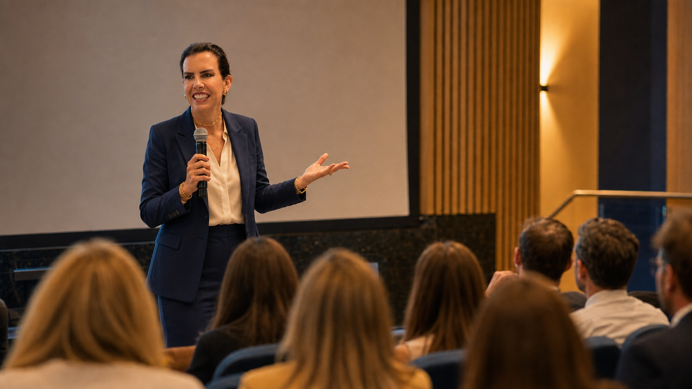

Pessoas
Entrada, desenvolvimento, pertencimento e saúde. Do onboarding à liderança que apoia no cotidiano.
Nexara Consulting · São Paulo
A escola cresce. A estrutura precisa acompanhar.
Arquitetamos o ecossistema humano escolar para conectar pessoas, decisões e crescimento sem perder quem sustenta tudo.
Ele aparece em horas, desgaste e decisões que nunca chegam a quem poderia tomá-las.
Os sintomas mudam de nome. A causa se repete: a escola cresceu, mas o ecossistema humano ficou para trás.
Ver como a Nexara organiza isso ↘Quando uma dimensão se desequilibra, toda a escola sente. Quando uma se fortalece, as outras acompanham.
Entrada, desenvolvimento, pertencimento e saúde. Do onboarding à liderança que apoia no cotidiano.
Prioridades que consideram a capacidade de sustentar a operação e quem faz a escola acontecer.
Papéis claros, decisões no lugar certo e rituais que reduzem o peso concentrado na direção.
Aquilo que se pratica quando ninguém está apresentando os valores da instituição.
A Nexara não entrega pacote fechado. O diagnóstico encontra a primeira peça. O método conecta as próximas.
Saúde organizacional e riscos psicossociais.
↗Governança da relação escola-família.
↗Cultura, pertencimento e jornada do colaborador.
↗Desenvolvimento de lideranças escolares.
↗Cargos, salários, carreira e retenção.
↗Cultura e governança de inclusão escolar.
↗People Analytics. Dados que dão suporte à decisão.
↗Boas intenções precisam de estrutura. Estes são os princípios que orientam a metodologia, a relação com clientes e a forma de entregar.
Transformar desafios em caminhos claros, com método e direção.
Nenhum projeto cria dependência. A escola sai capaz de operar o que foi construído.
Uma cultura forte nasce quando as pessoas entendem seu papel e constroem junto.
Ações pontuais em estrutura adoecida geram apenas alívio momentâneo.
Toda decisão começa com diagnóstico, evidências e leitura de cenário.
Nenhuma escola precisa resolver tudo de uma vez. Cada etapa fortalece a próxima até que a escola opere com mais autonomia.
Entender onde está o maior risco ou oportunidade.
Organizar papéis, cultura, liderança, relações ou dados.
Instalar rituais, formar equipes e consolidar a mudança.
Transformar percepção em dado e dado em decisão.
Operar com autonomia, com acompanhamento quando necessário.

fundadora
NEXARA
Beth Loureiro atravessou culturas sueca, americana e indiana em multinacionais e dedicou os últimos 15 anos ao setor educacional. A Nexara nasce dessa experiência por dentro da escola e de uma convicção: boas intenções precisam de estrutura.
Vamos entender o que precisa ser estruturado para a sua escola sustentar o próximo estágio.
Agendar um diagnóstico ↗